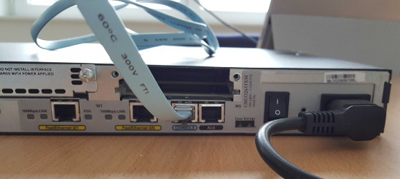
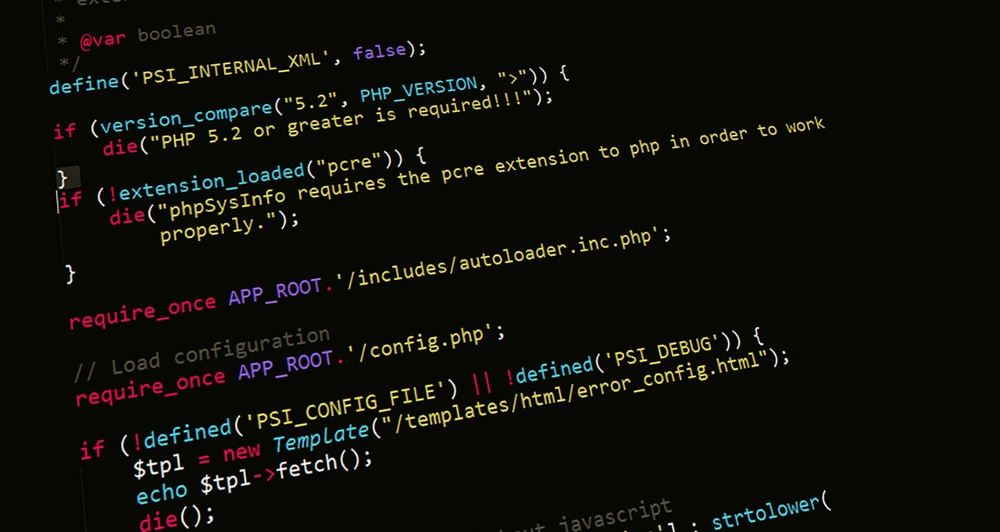

Compétences
Compétences organisées par grandes familles. Cliquez sur une compétence depuis Projets pour y accéder directement.

Routage
OSPF, BGP, planification d'adressage et dépannage des tables de routage.
Switching
VLAN, trunks, Spanning Tree et sécurité portuaire pour segmentation.
Sécurité & segmentation
ACL, filtrage inter-VLAN et principes de micro-segmentation.
VPN & inter-sites
Tunnels IPsec, solutions opérateurs et interconnexion multisite.

Python
Automatisation, scripts d'administration, parsing et APIs.
Shell
Scripts Bash pour déploiement et tâches d'administration.
Jupyter
Notebooks pour prototypage, visualisation et démonstrations.
C++
Programmation orientée performance et conception objet pour outils.
Java
Applications serveur et Android, gestion d'APIs et traitement back-end.

HTML / CSS
Structure sémantique, responsive et optimisation des ressources.
JavaScript
Interactions simples et widgets côté client.
PHP
Développement serveur, scripts côté back-end et intégration base de données.
Déploiement
Hébergement statique, optimisation et bonnes pratiques.
Linux
Administration, services et scripting.
Wireshark
Capture et analyse de paquets pour diagnostic réseau.
Packet Tracer
Simulation de topologies et vérification de configurations.
Bases de données (SQL)
Modélisation, requêtes SQL, création et interrogation de bases de données.
Git
Gestion de versions pour code et documents.
Supports physiques
Câbles coaxiaux, paires et caractéristiques de transmission.
Réseaux d'accès
Principes 4G/5G et règles de qualité de service.
Mesures
Tests de performance pour valider débits et latences.
Analyse du signal
Traitement et interprétation des signaux pour diagnostic et optimisation.
Communication
Rédaction de comptes rendus et présentations claires.
Gestion de projet
Planification, suivi et coordination des livrables.
Autonomie
Résolution d'incidents et apprentissage rapide.
Travail d'équipe
Collaboration, répartition des tâches et communication en équipe.